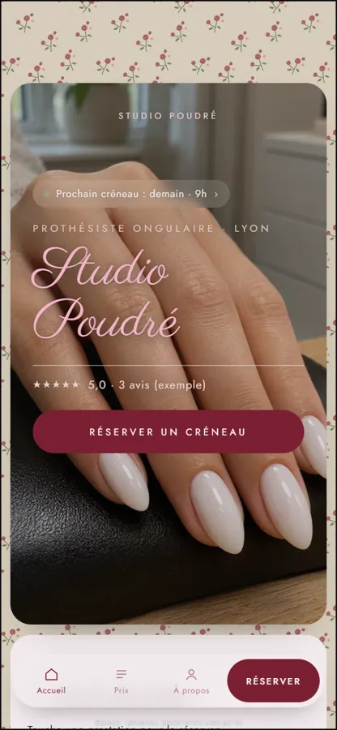
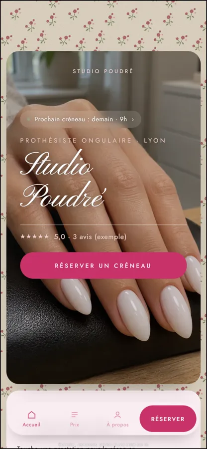
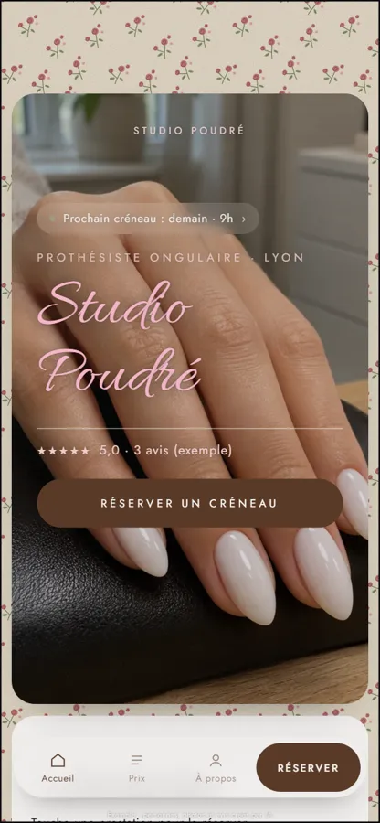
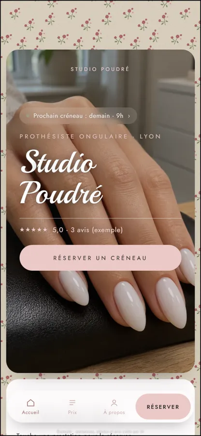
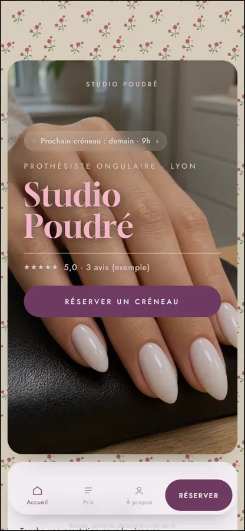
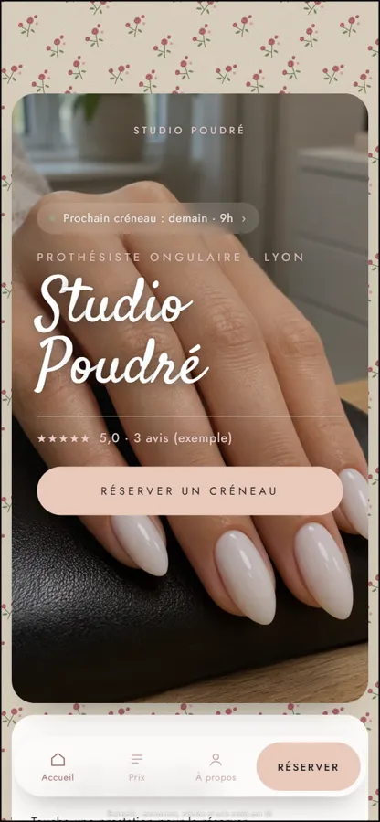

Piste 1 (petites roses), avec 6 écritures et 6 couleurs de bouton « Réserver un créneau ». Dites-moi le numéro, ou « l’écriture du 2 avec le bouton du 5 ».






Photos et salons d’exemple créés par IA.